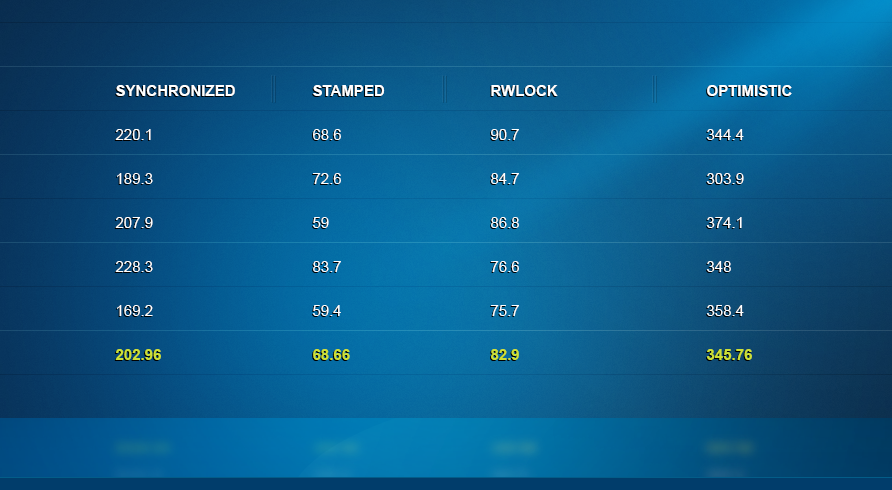
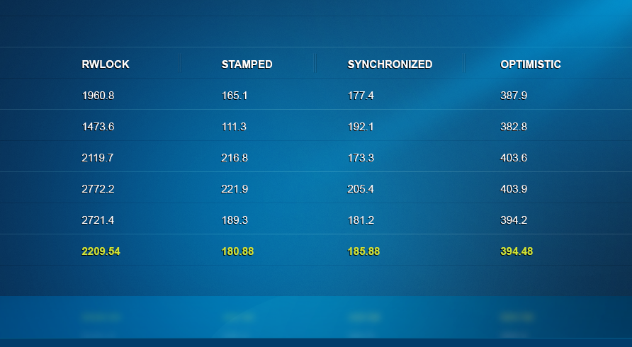
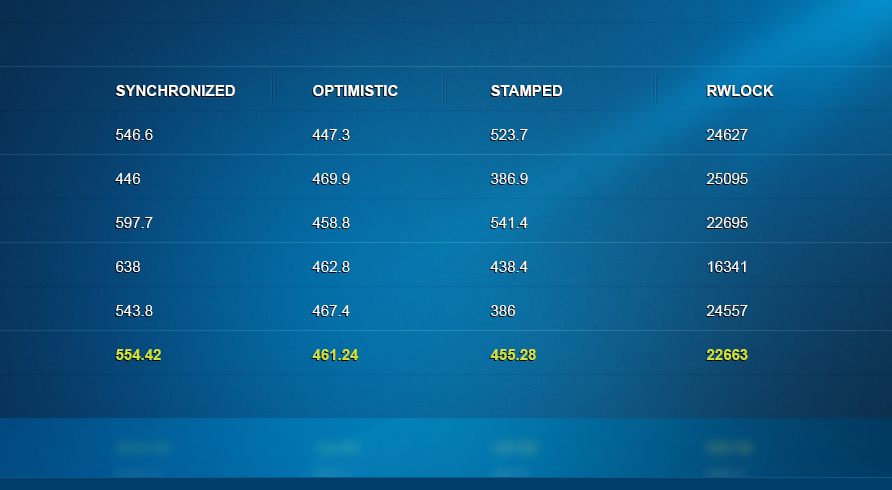
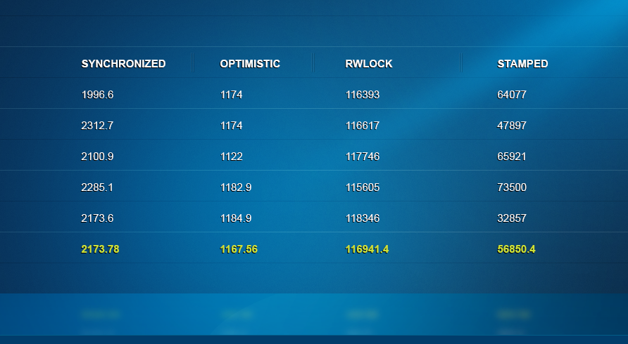

同步区域有点像拜访你的公公婆婆。你当然是希望待的时间越短越好。说到锁的话情况也是一样的，你希望获取锁以及进入临界区域的时间越短越好，这样才不会造成瓶颈。
synchronized关键字是语言层面的加锁机制，它可以用于方法以及代码块。这个关键字是由HotSpot JVM来实现的。我们在代码中分配的每一个对象，比如String, Array或者一个JSON文档，在GC的层面的对象头部，都内建了一个加锁的机制。JIT编译器也是类似的，它在进行字节码的编译和反编译的时候，都取决于特定的某个锁的具体的状态和竞争级别。
同步块的一个问题在于——进入临界区域内的线程不能超过一个。这对生产者消费者场景是一个很大的打击，尽管这里有些线程会尝试进行独占式的数据编辑，而另外一些线程只是希望读取一下数据，这个是可以和别的线程同时进行的。
读写锁（ReadWriteLock）是一个理想的解决方案。你可以指定哪些线程会阻塞别的操作（写线程），哪些线程可以和别人共同进行内容的消费（读线程）。一个美满的结局？恐怕不是。
读写锁不像同步块，它并不是JVM中内建支持的，它只不过是段普通的代码。同样的，要想实现锁机制，它得引导CPU原子地或者按某个特定的顺序来执行某些特定的操作，以避免竞争条件。这通常都是通过JVM预留的一个后门来实现的——unsafe类。读写锁使用的是CAS操作来将值直接设置到内存中去，这是它们线程排队算法中的一部分。
尽管这样，读写锁也还不够快，有时候甚至会表现得非常慢，慢到你压根儿就不应该使用它。然而JDK的这帮家伙们没有放弃治疗，现在他们带来了一个全新的StampedLock。这个读写锁使用了一组新的算法以及Java 8 JDK中引入的内存屏障的特性，这使得这个锁更高效也更健壮。
它兑现了自己的诺言了吗？让我们拭目以待。
使用锁
StampedLock的用法 更为复杂。它使用了一个戳（stamp)的概念，这是一个long值，它用作加锁解锁操作的一个标签。这意味着想要解锁一个操作你得将它对应的戳给传递进去。如果你传入的戳是错误的，那么可能会抛出一个异常，或者更糟糕的是，无法预知的行为。
另外一个值得关注的重要问题是，StampedLock并不像ReadWriteLock，它不是可重入的。因此它虽然更快，但也有一个坏处是线程可能会自己产生死锁。在实践中，这意味着你应该始终确保锁以及对应的戳不要逃逸出所在的代码块。
|
|
这个设计还有个让人无法忍受的地方是这个long类型的戳对你而言没有任何意义。我还是希望锁操作能返回一个描述这个戳的对象——包括它的类型，锁的时间，owner线程，等等。这让调试和跟踪日志变得更简单。不过这么做很有可能是故意的，以便阻止开发人员不要将这个戳在代码里传来传去，同时也减少了分配对象的开销。
乐观锁
这个锁最重要的一个新功能就是它的乐观锁模式。研究和实践表明，读操作占了绝大数，并且很少和写操作竞争 。因此，使用一个成熟的读锁有点浪费。更好的方式是直接去读，结束之后再看一下这段时间内这个值有没有被改动过。如果有的话，你再进行重试，或者升级成一个更重的锁。
|
|
使用锁最大的麻烦在于，它在生产环境的实际表现取决于应用的状态。这意味着你不能凭空选择使用何种锁，而是得将代码执行的具体环境也考虑进来 。
并发的读写线程数会影响到你具体使用哪种锁——同步区还是读写锁。如果这些线程数在JVM的执行生命周期内发生改变的话，这个问题就更棘手了，这取决于应用的状态以及线程的竞争级别。
为了能说明这点，我对四种模式下的锁进行了压测——synchronized，读写锁，StampedLock的读写锁，以及读写乐观锁，分别使用了不同的竞争级别以及不同读写线程数的组合。读线程会去消费一个计数器的值，而写线程会将它从0增加到1M。
5个读线程，5个写线程
5个读写线程分别在并发地执行，可以看到StampedLock明显胜出了，它的性能要比synchronized高出3倍。读写锁的性能也不错。奇怪的是，乐观锁，表面看起来应该是最快的，实际上这里却是最慢的。

10个读线程，10个写线程
下面，我将竞争级别提高到10个写线程和10个读线程。现在情况开始发生变化了。读写锁要比StampedLock以及synchronized慢了一个数量级。说到乐观锁还是很让人意外，它比StampedLock的读写锁还要慢。

16个读线程，4个写线程
下面，我保持同样的竞争级别，不过将读线程的比重调整了下：16个读，4个写。读写锁再说次说明了为什么它要被替换掉了——它慢了百倍以上。Stamped以及乐观锁都表现得不错，synchronized也紧随其后。

19个读，1个写
最后，我只留了一个写线程，剩下19个全是读。注意到结果更慢了，因为单个线程完成任务的时间会更长。这里的结果非常有意思。读定锁看起来像是完成不了了。StampedLock的话也不太理想——乐观锁在这里明显胜出，百倍于读写锁。需要记住的是这个模式下它可能会失败，因为写操作可能会在你读的时候出现。synchronized，我们忠实的老伙伴，依旧保持着很稳定的表现。

完整的结果可以在这里下载。硬件：Macbook Pro i7
测试代码见这里。
结论
看起来平均表现最佳的还是内部实现的synchronized锁。尽管如此，并不是说它在所有情况下都是表现得最好的。主要是想告诉你，采用哪种锁，应该在你的代码上线前在不同的竞争级别下，并且使用不同的读写线程数来进行详细的测试，根据结果来选择。否则你会面临线上故障的风险。
更多的关于StampedLock的资料见这里